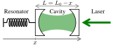
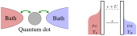

Research¶
Quantum thermodynamics¶

Thermodynamics was developed in the 19th century to study steam engines using the cyclical transformations of a working substance to extract heat from thermal baths and convert it into work, possibly stored in a battery. This applied science eventually led to the development of fundamental concepts such as irreversibility. Quantum thermodynamics aims at revisiting these results when the working substances, baths and batteries become quantum systems. See for instance the book Thermodynamics in the quantum regime: fundamental aspects and new directions (most of the chapters can also be found on arXiv) for a review of the field.
My research mainly focus on the thermodynamics of quantum open systems, in regimes relevant for experimental implementations, both in quantum optics and quantum transport.
PhD dissertation: Quantum Thermodynamics and Optomechanics
Quantum optics¶
Cavity optomechanics
{kind=link}
The light field in an optical cavity interacts with a mechanical resonator via radiation pressure. In a typical setup, the cavity has one moving end-mirror which constitutes the mechanical degree of freedom. When the mechanical position varies, the cavity length changes which modifies its resonance frequency. On the other hand, when adding more photons in the cavity, the radiation pressure on the mirror increases, which shifts the resonator’s rest position. This optomechanical coupling gives a high degree of control on the dynamics of the mechanical resonator through the cavity, making it possible to use this platform for applications such as ground state cooling, sensing or quantum manipulations of the mechanics. It also makes it of great interest for thermodynamics: work and entropy measurements, heat engines proposals, …
In collaboration with Witlef Wieczorek’s experimental group, we have studied the thermodynamic performance of optomechanical cooling,
Optomechanical cooling with coherent and squeezed light: The thermodynamic cost of opening the heat valve – Phys. Rev. A 103, 063519 (2021) – Video of my talk at the TIQuR workshop
and modeled all the optomechanical effects taking place in a microcavity with a suspended photonic crystal mirror.
Integrated microcavity optomechanics with a suspended photonic crystal mirror above a distributed Bragg reflector – Opt. Express 31, 30212
Dissipative and dispersive cavity optomechanics with a frequency-dependent mirror – arXiv:2311.15311
Hybrid optomechanical systems

This is a different kind of optomechanical system where the optical part is a qubit instead of a cavity. The qubit’s transition frequency is modulated by the vibrations of the mechanical system. The mechanical degree of freedom exchanges work with the qubit and therefore behaves like a dispersive battery, i.e. whose natural frequency is very different from the one of the qubit’s transition. The electromagnetic environment of the qubit plays the role of the thermal bath. The fluctuations of the mechanical energy are equal to the fluctuations of work, which allows the direct measurement of entropy production. As a result, hybrid optomechanical systems are promising for experimentally testing fluctuation theorems in open quantum systems.
An Autonomous Quantum Machine to Measure the Thermodynamic Arrow of Time – npj Quantum Inf. 4, 1 (2018) – Video of my talk at the II Workshop on Quantum Information and Thermodynamics
One-dimensional atoms

A qubit is embeded in a one-dimenstional waveguide and the battery is the waveguide mode of same frequency as the qubit’s transition. Therefore, this is a resonant battery, unlike in the optomechanical case, which makes this platform especially promising to study the impact of coherences on work exchanges.
The Energetic Cost of Work Extraction – Phys. Rev. Lett. 124, 130601 (2020) – Video of my talk at the QTD2020 conference
Electronic systems¶
Mesoscopic conductors

We study transport in mesoscopic conductors connected to two terminal or more with a scattering approach. We are particularly interested in properties of the current fluctuations in nonequilibrium situations where the average current is zero (for spin, charge, heat, …).
Charge, spin, and heat shot noises in the absence of average currents: Conditions on bounds at zero and finite frequencies – Phys. Rev. B 107, 075409
Driven quantum dots
{kind=link}
A quantum dot is weakly coupled to two baths, namely is two electron reservoirs characterize by a temperature and a chemical potential. Electrons can tunnel in and out of the quantum dot. Parameters of this system can be driven (energies, chemical potentials, tunnel couplings, temperatures, …). We investigate particle and energy currents for slow periodic driving up to the first non-adiabatic correction using a master equation approach and a dissipative symmetry of the system called fermionic duality,
Geometric energy transport and refrigeration with driven quantum dots – Phys. Rev. B 106, 035405 (2022) Editors’ suggestion – My poster at the QTD2022 conference
and beyond the first correction, for a more traditional four-stroke refrigeration cycle.
Non-geometric pumping effects on the performance of interacting quantum-dot heat engines – arXiv:2303.15420
We also use fermionic duality at the jump operator level to explore the stochastic thermodynamics of such kind of systems.
Suspended carbon nanotubes

These devices combine electronic transport and mechanical degrees of freedom which makes them a very promising platform for thermodynamics. Charge or spin qubits can be created inside the nanotube, making these devices similar to hybrid optomechanical systems.
I am taking part in the FQxI-funded project Nanomechanics in the solid-state for quantum information thermodynamics led by Natalia Ares (Oxford University, UK).
Ultrastrong coupling between electron tunnelling and mechanical motion – Phys. Rev. Research 4, 043168 (2022)
Stability of long-sustained oscillations induced by electron tunneling – arXiv:2211.04074
Coupling a single spin to high-frequency motion – arXiv:2402.19288